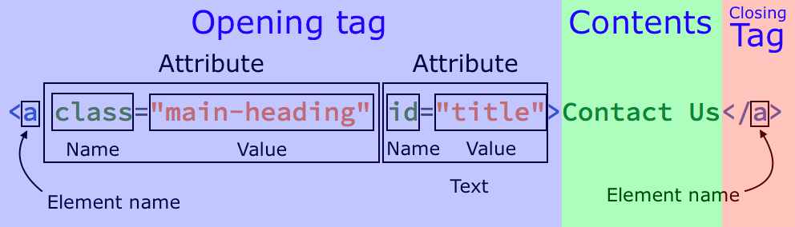

10 Min Review
- HTML - Hypertext Mark-up Language
- HTML: Structure, CSS: Style, Javascript: Interactivity
-
HTML Syntax like how to open and close tags. Syntax* is a linguistics
term. It's a set of rules for a language. Every language, whether it's
English or HTML, has syntax.

- Aside: Not all tags have a closing tag!
-
We saw style tags and script tags. Within our style tags we write CSS
and within our script tags we write javascript. Big idea: We can,
technically, create an entire website on one page, but you should not.
In real life, all three are separated, but more on this later!
-
We learned about anchor tags to create hyperlinks. We
saw paragraph tags and tags.
-
When we discussed p tags and span tags, Nazia reminded us about HTML
default styles, when she mentioned "block elements" and "inline
elements". Block elements like p tags, and divs take up all the space
given to them. Inline elements remain within the main text. They don't
seek a new line. Example of inline elements: a tags, buttons etc.
- Big idea: HTML has default styles.
-
Lastly, we covered semantic HTML or HTML5. Semantic HTML = meaningful
HTML. It allows us to understand what we've written and it allows
screenreaders to navigate websites with ease too. Recall we learned
about
header tags and footer tags. Using those tags did not change anything
on the page but it provided us with some context.